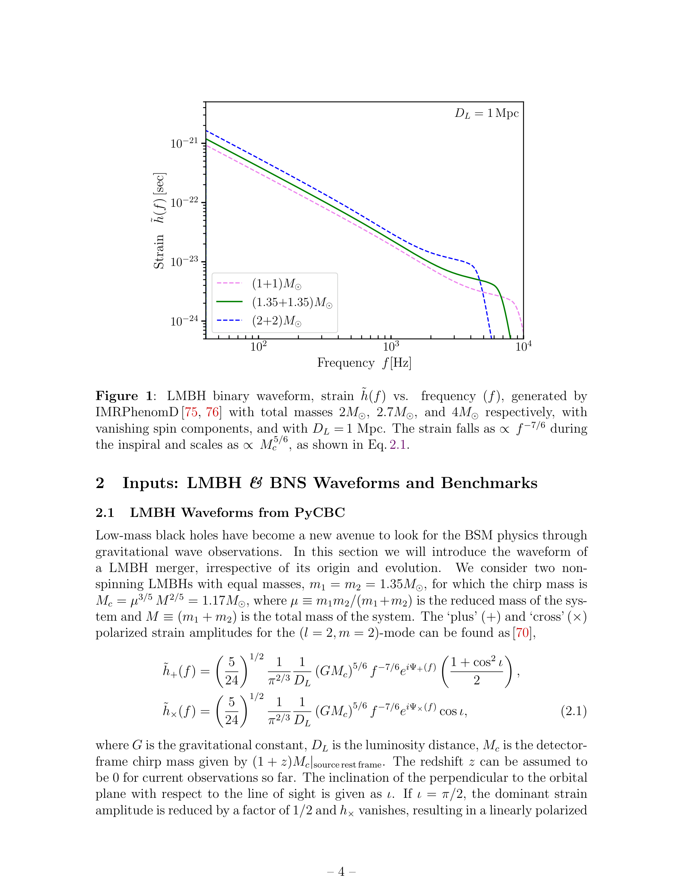

저자: Sulagna Bhattacharya, Shasvath Kapadia, Basudeb Dasgupta | 날짜: 2025 | Link: https://arxiv.org/abs/2507.15951

Figure 1
저질량 compact binary coalescence(1-2.5 M_sun)에서 binary neutron star(BNS)와 binary low-mass black hole(LMBH) merger를 postmerger 중력파 파형의 차이를 통해 구별하는 방법을 제시한다. 차세대 검출기(NEMO, CE, ET)에서의 검출 가능성을 예측하고, LMBH fraction에 대한 exclusion sensitivity를 dark matter 상호작용 bound로 변환하는 새로운 분석 프레임워크를 구축했다.
Abstract에서 추출된 독창성 문장: We demonstrate that waveform differences in the late-inspiral to postmerger epochs create significant mismatches that will be detectable by planned detectors, viz., NEMO, Cosmic Explorer, and Einstein Telescope, while the currently operational LIGO A+ will be effective only for nearby sources.. These differences are enhanced for stiffer equations of state.. We show how the redshift-dependent compact binary merger rate inferred from gravitational wave observations can be parsed into BNS and LMBH components, accounting for misclassification probability.. We forecast model-independent 90% exclusion sensitivities for the LMBH fraction.. Interpreting these LMBHs as dark matter capture-induced transmuted black holes, we convert exclusion sensitivities into projected exclusion bounds on heavy non-annihilating dark matter.. Our results illustrate how gravitational wave measurements can disentangle compact object populations and provide new insights into particle dark matter interactions.
총평: Postmerger 중력파를 통한 BNS/LMBH 구별과 이를 dark matter physics로 연결하는 독창적 분석 프레임워크를 제시한 연구이다. 차세대 검출기 시대의 compact binary population 연구에 중요한 방법론적 기여를 하나, AI 방법론과의 직접적 연계는 향후 과제이다.